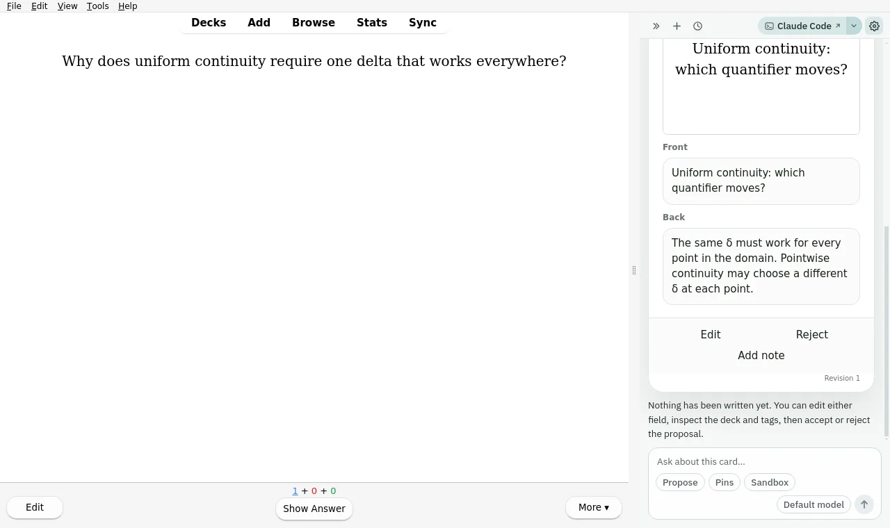
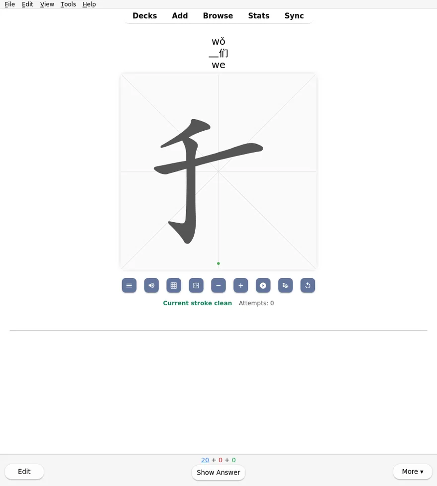

the theme that keeps returning
Ritornello is a small workshop of open-source add-ons, shared decks, and developer tooling for serious spaced-repetition practice — built around Anki today, aimed at wherever deliberate practice goes next.
Everything here is dogfooded: each add-on and deck runs inside a real, daily practice before it is published, and keeps earning its place afterward. The name is the method — in a ritornello the theme returns between episodes, and in practice, so does everything worth keeping.
Add-ons
Published on AnkiWeb, source on GitHub. Hover a title to peek; click to keep it open.
-
Talk to your collection while you study: the current card rides along as context, and the agent can search your decks, explain the missing prerequisite, and propose new notes — every write goes through a reviewable, revertible proposal. developer preview

Decks
Interactive courses first, then the shelf.
-
Stroke-by-stroke handwriting practice for the HSK 3.0 character set, with offline stroke-order data on every card.

Programme I — Maps & regions
- U.S. Regions and DivisionsAnkiWeb
- U.S. StatesAnkiWeb
- Brazilian StatesAnkiWeb
- Brazilian DDD CodesAnkiWeb
- Regions of ChinaAnkiWeb
- Taiwan DivisionsAnkiWeb
- Japan GeographyAnkiWeb
- Turkey RegionsAnkiWeb
- South Africa ProvincesAnkiWeb
- Mexico Federative EntitiesAnkiWeb
- Iran ProvincesAnkiWeb
- Nigerian StatesAnkiWeb
Programme II — Sequences & scripts
Tooling
For people who build add-ons and decks themselves.
-
Guarded native collection operations — like true Again grading on arbitrary cards — that other add-ons and local agents can compose safely.